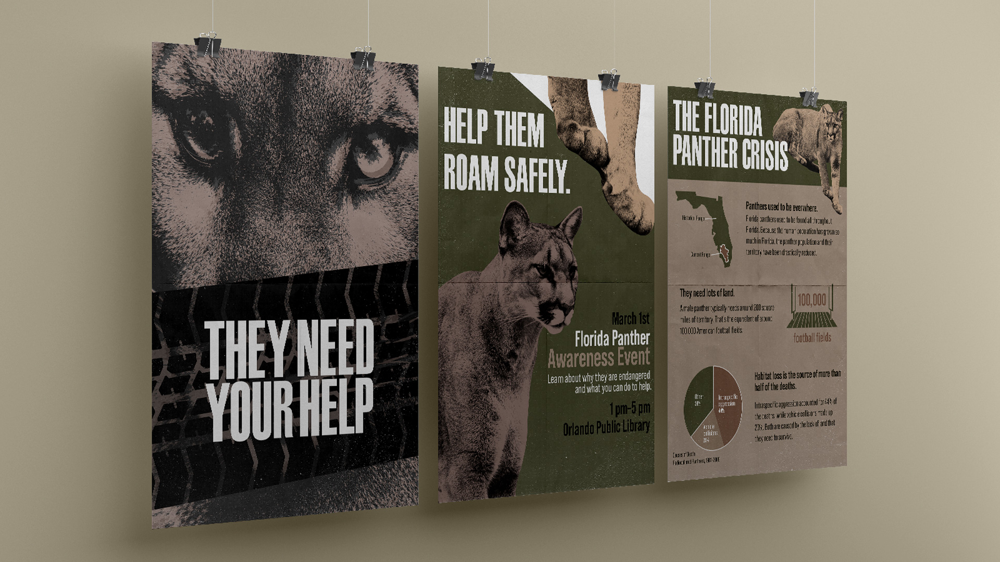
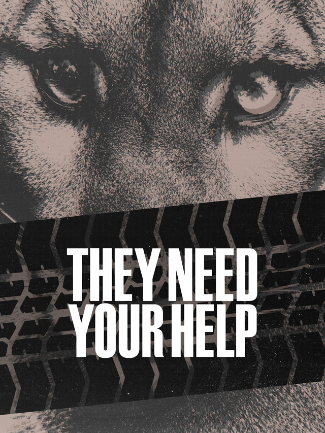
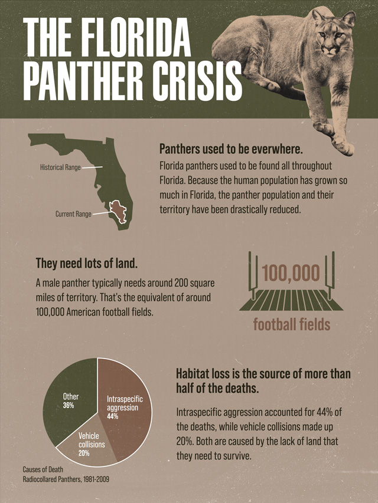
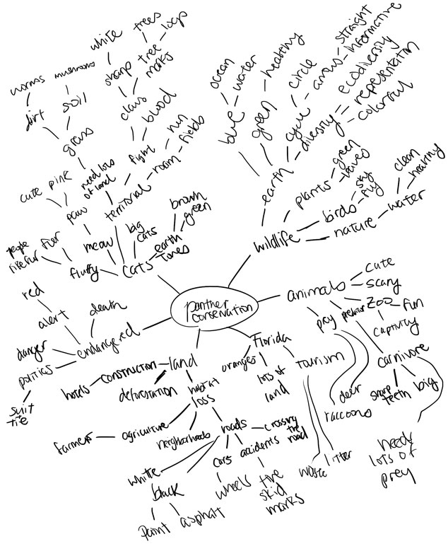
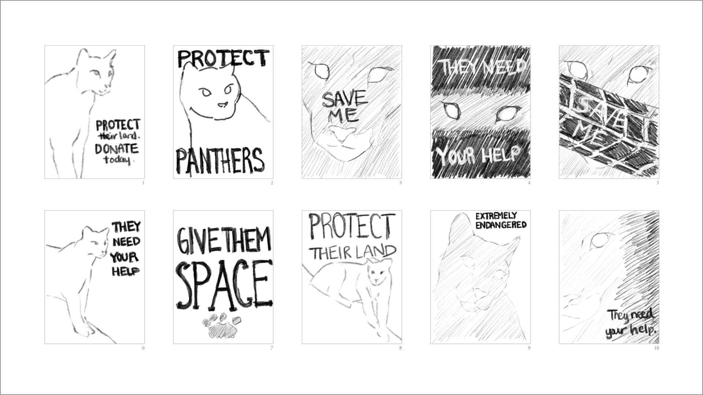
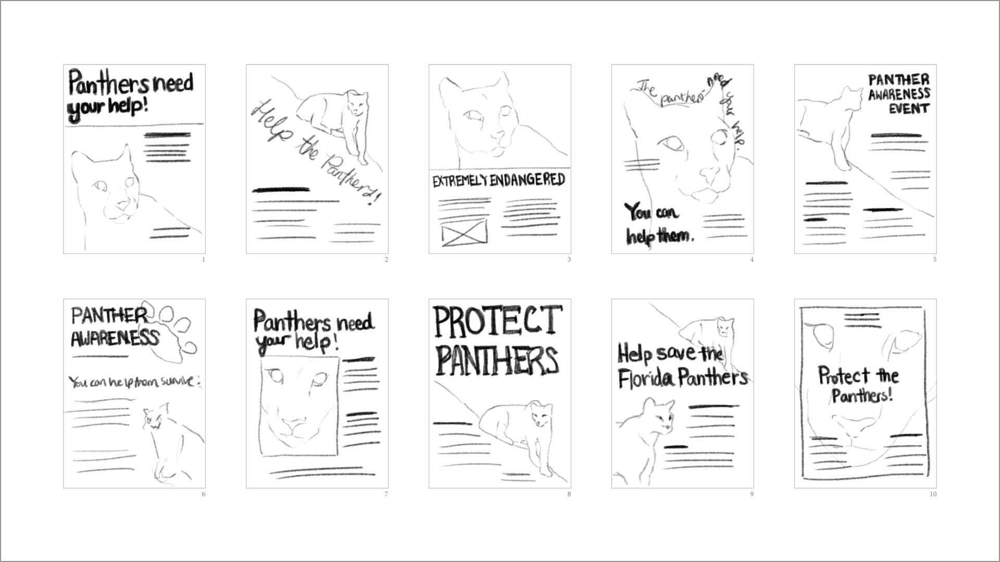
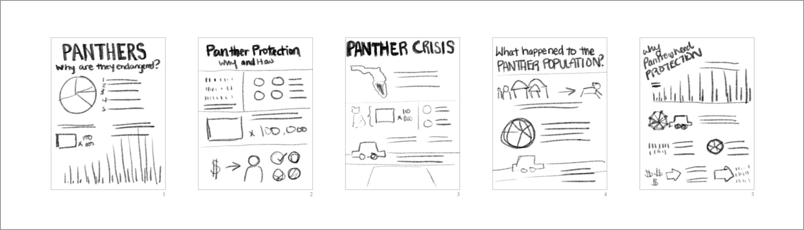
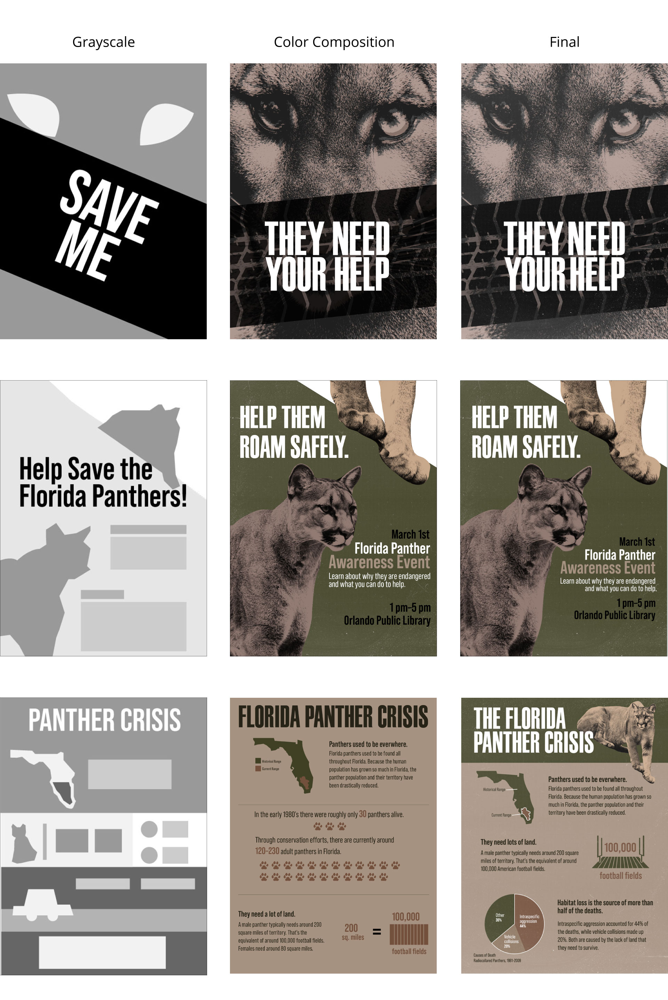

Florida Panther Poster Series
Challenge: In my graphic design class, I was tasked to design a series of environmental awareness posters focusing on three intents: showcase, promotional, and informational. I focused on raising awareness for the Florida panthers, which are an endangered species.
Solution: I utilized neutral, earthy tones to theme my concepts around feelings of “caring for nature”. Gritty textures were emphasized to draw the eye to the panthers.

Showcase

Promotional
Informational

Process Work

Showcase poster thumbnails

Promotional poster thumbnails

Informational poster thumbnails

Grayscales, color compositions, and final

Credits
Photos courtesy of:
Meg Jerrard from Unsplash
Priscilla Du Preez from Pexels
Leah Huyghe from Unsplash
Film dust textures courtesy of Chris Spooner